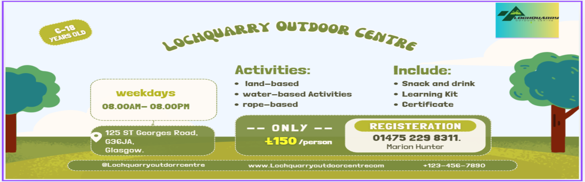

Lochquarry Outdoor Centre
- Each activity is run under the instruction of one of our highly trained staff
and all safety equipment is provided. Let’s meet some of the Lochquarry staff:
- Name: Claire Jack
Position: Centre Manager
Responsible for: The overall running of the centre and all of its activities
Favourite Activity: Pole climb
-
Name: Robbie Elliot
Position: Senior Instructor (Land)
Responsible for: Overseeing all of the land based activities
Favourite Activity: Hillwalking in the beautiful Scottish highlands
-
Name: Marion Hunter
Position: Centre Administrator
-
Responsible for: Making bookings and arranging activity slots for groups
Favourite Activity: Making sure everyone has a great time when the visit
Lochquarry
Our activities are very popular with youth groups including Scouts and Guides.
